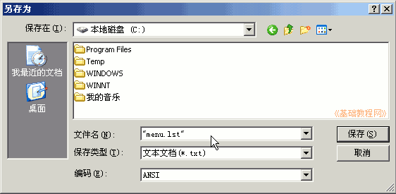
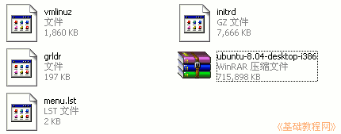

Ubuntu 安装基础教程
作者：Teliute 来源：基础教程网
四、引导系统 返回目录 下一课准备好分区以后，我们就可以着手启动Ubuntu的安装盘了，下面我们来看一个练习；
1、光盘安装
1）如果把镜像刻成了光盘，则可以直接使用光盘启动，在CMOS设置里把光盘设为第一启动；
2）设置光盘启动的详细操作，参看http://teliute.org/win/XPsetup/lesson5/lesson5.htm
2、硬盘安装
1）如果没有刻录好的安装盘，也可以直接用硬盘启动，下面我们来学习一下操作方法；
2）双击下载的ISO镜像文件，用WinRAR打开它，如果打不开，就先打开WinRAR程序窗口，再把下载的ISO镜像文件拖到WinRAR窗口中；
3）在窗口中找到上面的casper文件夹，双击打开这个文件夹，里面有一个in打头和vm打头的文件，
这两个initrd.lz和vmlinuz就是系统引导文件，需要把他们解压出来；
4）单击选中initrd.lz文件，然后点菜单“文件－复制文件到剪贴板”，按Ctrl＋C组合键也行；
5） 在“我的电脑”图标上点右键， 选择“资源管理器”命令，然后在左边找到C:盘，瞄准点右键选“粘贴”命令，把initrd.lz粘贴到C:盘里头，
同样把vmlinuz文件也复制到C:盘里头，关闭 WrinRAR窗口，把这个ISO镜像文件也复制到C:盘里头去；
3、制作menu.lst文件
1）打开记事本，输入下面的内容，也可以复制粘贴进去，本课文件夹中有这个menu.lst文件；
| title
Install Ubuntu
root (hd0,0) kernel /vmlinuz boot=casper iso-scan/filename=/ubuntu-8.04-desktop-i386.iso quiet splash ro locale=zh_CN.UTF-8 noprompt -- initrd /initrd.lz |
2） 点菜单“文件－保存”，位置保存在C:盘，文件名输入 "menu.lst" ，注意有一对英文的双引号；

3） 再下载一个grldr文件，也复制到C:盘中，本课的文件夹里有这个grldr，这样在C:盘里面就有5个复制过来的文件了，仔细检查一下；

4、修改WinXP的启动文件boot.ini
1）WinXP的启动配置文件，是一个boot.ini文件，打开这个文件，修改里面的timeout=0，把0改成3，添加下面这句即可：（本课有个boot.ini范例）
timeout=3
c:\grldr="Install Ubuntu"
2）关于修改boot.ini的详细操作，请参看：http://teliute.org/win/TeComput/lesson33/lesson33.html
3）这样我们就完成了启动Ubuntu安装盘的准备工作，注意细致和耐心；
本节学习了准备Ubuntu启动的引导文件，如果你成功地完成了练习，请继续学习下一课内容；本教程由86团学校TeliuTe制作|著作权所有
基础教程网：http://teliute.org/
美丽的校园……
转载和引用本站内容，请保留版权信息和本站链接。